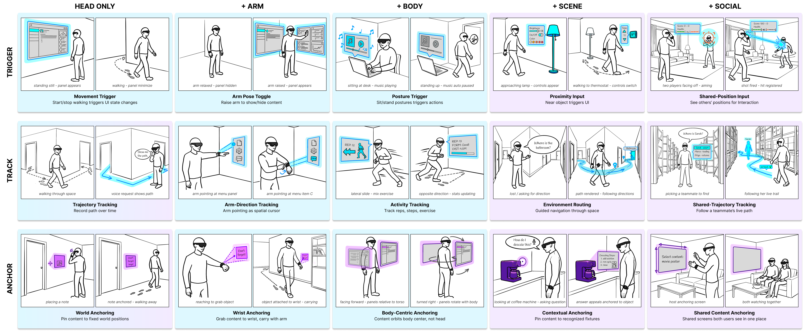

This page is the screen-share surface for the whole session. Participant-facing text is ready to read aloud; the orange facilitator layer stays hidden unless toggled (press Shift+F while no text field is focused, or open a private window with #fac).
read aloud
Thank you for joining. We are studying how designers make interaction decisions for AR glasses that have no camera during use. Over the next 75 minutes you will design for one scenario, twice, with a short tutorial in between; then you will see five things we built and tell us where you disagree with our map. There are no right answers; we want your reasoning aloud. We record audio and this screen. Any questions before we start?
Background (for our records, one minute)
Before the session. Consent signed · recording ON (audio + screen) · fill the background form now. IRB: STU00226775, exempt · $50 Tango after session · 75 min target. Start the clock (top right) at consent.
0–3
intro + background
40–48
demos (5 videos)
3–15
1a design WITHOUT the space
48–65
frontier critique
15–25
tutorial (3 pages + 2 warm-ups)
65–70
closing + export
25–40
1b redo WITH the space
Brief assignment: odd id = A (gym), even id = B (warehouse); PILOT defaults to A. The kit preselects from the id; override on the 1a page if needed. Order is load-bearing: the grid must not appear before 1a is finished; demos come after 1b.
Part 1 · Design for this hardware (12 min)
read aloud
Here is the hardware and a brief. For each of the five needs, type what the user does, where the content lives, and what the system would need beyond the sensors that are worn. Think aloud while you type; I will only ask questions.
Hardware. The user wears AR glasses with an inertial unit (accelerometer, gyroscope). No camera and no eye tracker during use. A watch on one wrist and a phone in one pocket may be worn. A single scan or setup step at the start of a session is allowed if you want it; say so explicitly.
Brief (default from id parity; override here):
Your answers (type in each box; short phrases are fine)
One follow-up only, per need, when the content is placed somewhere: "What has to be known for it to stay there?" Do not mention frames, colors, fixes, or drift. If the expert asks what sensing is available, repeat the hardware statement verbatim. Leave a row blank rather than paraphrase beyond what was said.
Tutorial (10 min)
read aloud
We organize embodied AR interaction by two questions. What does the content bind to? And how much does the system commit to?
Reference frame: what does the content bind to?
Head: the viewpoint
+Arm: the wrist and hand
+Body: the torso and posture
+Scene: objects and rooms
+Social: another person or a frame two people share
Commitment: what does the frame do?
Trigger: the frame's own state change fires an event (a nod, a tap on the palm, a hand touching a table)
Track: the frame's continuous motion is the input
Anchor: content stays registered in the frame over time
Common layer. Selecting a target you point or look at and confirming with a pinch or button works in every frame; we set it aside as a common layer.
read aloud
Here is the grid, colored by what the worn inertial sensors can deliver on their own. Click the picture to enlarge it.

Blue: the body's own pose, known from within, drift-free, deliverable today with no external fix.
Gradient (Head track, Head anchor): the wearer's own position in the world, integrated from motion, drifts, holds as long as an occasional fix arrests it.
Purple: what the world contains and where other people are; imported by a scan or shared setup, then held.
Say once, pointing at the Head column: "orientation is blue, position is the gradient: a panel that turns with your head is free, a panel that stays where you stood costs a fix."
read aloud
One rule follows from the coloring.
Place each interaction at the innermost frame that holds it, and spend the external fix only where content must bind to the world or to others.
ask
Two warm-ups before we go back to your design. Where would you place: a head nod that dismisses a notification? And: a note pinned to a door?
Answers: head nod = Head × Trigger (blue) · door note = +Scene × Anchor (purple). Correct both before proceeding.
Corrections needed: more than 2 = tutorial too dense; log it.
Part 2 · Your design, with the grid (12 min)
read aloud
Here are your five answers from before, with the grid beside them. For each one: click the cell where the interaction lives, say what the system needs beyond the worn sensors to keep the content where it belongs, and type whether you would now change the design, and why. An interaction may pass through more than one cell, for example content pinned to a machine that you then copy to your wrist: click the cells in the order they happen, and click a cell again to remove it. The grid shows the color of what you picked; nothing here is marked right or wrong.
What a fix means here
The worn inertial sensors always know the body's own pose. They do not know where the wearer is in the room, or where objects and other people are; that knowledge has to come from outside, and we call any such outside source a fix. Three answers per interaction:
none means the worn sensors alone keep the content where it belongs;
occasional fix means the wearer's own position has to be re-registered now and then, for example by a marker glanced at every minute or two, because it drifts in between;
setup or scan means the room or the object must be scanned once, or the two users must share a common start, before the content can be placed at all.
Blue: the body's own pose, known from within, no external fix.
Gradient: the wearer's own position in the world, holds with an occasional fix.
Purple: what the world contains and where other people are, imported by a scan or shared setup.
Cell picker for the highlighted row (click a row to select it first)
Which of these changes would you not have made without the grid?
The grid changed how I decide what sensing an interaction needs.
strongly disagree
Never say right or wrong. Each row records the expert's fix call; the expected call by cell color (blue = none, gradient = occasional, purple = setup) is computed only in the export and in the log below. A mismatch is the moment to probe once ("what would the system need to know there?"), not to correct. Type the why in the expert's words.
What we built (6 min)
read aloud
Five applications, all running live on glasses, watch, and phone, no camera during use. Each caption names the cells it occupies. After each one, tick whether it is something you would have thought of. At the end, type what is missing from this set.
What is missing from this set?
Timing (measured): navigator 21 s · gaming 11 s · context-aware 31 s · teleparty 37 s · pace-partner 31 s ≈ 2.2 min of video. Narrate over each using its caption line. Tick "I would have thought of this" only when the expert says so unprompted or when asked directly; do not lead.
Part 3 · An application of your own (8 min)
read aloud
Same hardware: glasses with an inertial unit, no camera and no eye tracker during use, watch and phone optional, one setup step allowed. Pick an application from your own domain and name it. Then we add three to five interactions one at a time: press "add an interaction", type what the user does, click the cell or cells it passes through, say what it needs beyond the worn sensors, and save it. It appears in the table, and we start the next one. Think aloud while you build.
Application name and domain
one interaction per entry; each gets its own cells and its own fix call
Interaction 1 of this application.
Type what the user does, click its cell or cells on the grid below (click again to remove), pick the fix call, then save it.
Interaction
no cell yet
Ask, do not suggest: "what has to be known for that to work?" once per interaction if the cell and the fix call disagree; take the answer down in the why box. Aim for 3 to 5 interactions; stop at 8 minutes.
Nothing is stored until "save this interaction" is pressed — an open editor with cells lit is not in the export. Export refuses to run while one is open.
The coloring (15 min)
read aloud
Now the grid on its own. Click any cell whose color you disagree with and type why. Be specific about what would have to be sensed. Once your objections are down, we will open our measurements for those cells, and you tell us whether they settle it.
Click the cell in question, then type the objection and the quantity it points to.
click a cell
Two phases. Blind (about 8 min): take every objection down as stated, one follow-up each: "what would you need to see measured to accept it?" Do not defend the coloring and do not open a card yet. Reveal (about 7 min): only for cells that were objected to, press "show our numbers", read the card, then the expert picks accepted / with reservation / not accepted and types what is still missing. Never open cards for cells without an objection.
Open questions
Is there an interaction native to inertial sensing that the grid has no place for?
Where is the grid most useful?
Where is it least useful?
What would you rename or drop?
Closing (5 min)
ask
If you started an AR project tomorrow with this hardware, what from today would you carry into it? What would you ignore?
Carry
Ignore
After the session: stop recording · export the session below · send $50 Tango · first-pass read of the before/after tables the same evening.